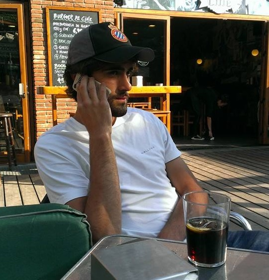

Quién es Román?

Román es el novio. Capitán del MarVerd. Más de VOX que Ortega Smith. Más perico que Iván de la Peña. Cómo al gran Julio Iglesias, le gustan las mujeres y le gusta el vino. No le hace feos al pacharán ni al gintonic. ¡Unas pomaditas coño!